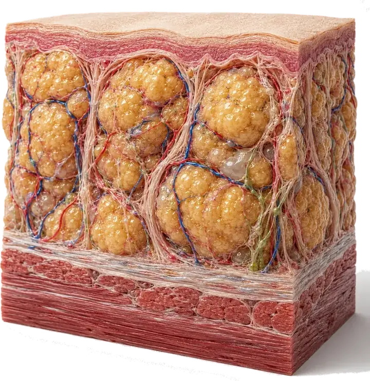

Lipedema en los brazos: no solo son las piernas
Llevas tiempo lidiando con las piernas y ya conoces la textura, el dolor al tacto, los moretones que aparecen sin golpe. Hace poco notaste algo parecido en los brazos: la manga aprieta arriba, pero en la muñeca sigue entrando igual.

En Medellín, en la consulta, casi todas las pacientes llegan preguntando por las piernas. El lipedema en los brazos suele aparecer como un hallazgo aparte, casi una sorpresa: te das cuenta al ponerte una chaqueta que antes te quedaba bien, al notar que la manga aprieta en el brazo pero la muñeca sigue libre, o al compararte con alguien de contextura parecida y ver que tus brazos no cambian aunque bajes de peso en el resto del cuerpo.
Por qué nadie te había hablado de esto
La mayoría de la información sobre lipedema, en internet y hasta en primera consulta, habla de piernas. Tiene sentido: ahí suele empezar y ahí es donde más se nota. Pero el lipedema no respeta un mapa fijo. En algunas pacientes, el mismo tejido que cambió en los muslos y las pantorrillas aparece también en los brazos, casi siempre después de que ya hay cambios establecidos en las piernas.
No es un brazo musculoso ni es "genética" sin más.
Qué lo diferencia de unos brazos simplemente grandes
El rasgo que más ayuda a distinguirlo no es el tamaño, sino cómo se siente. En el lipedema, la piel y el tejido de abajo duelen al tacto, incluso con una presión suave, y es frecuente que aparezcan moretones sin haberte golpeado. Al pellizcar la piel, el tejido suele sentirse distinto: más nodular, como pequeñas bolitas bajo la superficie, en lugar de liso. Y casi siempre es simétrico: lo que pasa en un brazo pasa, en mayor o menor grado, en el otro.
Otra pista: aunque bajes de peso en el resto del cuerpo con dieta y ejercicio, los brazos, igual que las piernas, cambian poco o nada.
Dónde aparece el lipedema en los brazos y dónde casi nunca
Cuando el lipedema llega a los brazos, suele cubrir desde el hombro hasta la muñeca, con un límite bastante marcado justo ahí: una especie de brazalete o manguito donde el tejido cambia de grosor de un momento a otro. Las manos, en la mayoría de los casos, quedan fuera: conservan su forma y tamaño habituales, igual que pasa con los pies cuando el lipedema está en las piernas. No es una regla absoluta: en algunas pacientes el límite es menos marcado, pero sigue siendo una de las señales que más se repite.
En qué etapa suelen aparecer los brazos, y cómo lo vemos en Medellín
Cuando se clasifica el lipedema por dónde se ubica (no por qué tan avanzado está), a la variante que incluye los brazos se le conoce como tipo IV, y casi siempre se presenta junto con afectación de piernas, no sola. Si ya tienes un diagnóstico de lipedema en las piernas y notas algo parecido en los brazos, no es casualidad: es un patrón conocido, aunque poco explicado en las primeras citas.
En Seravena preferimos revisar brazos y piernas en la misma valoración, aunque la paciente solo pregunte por una de las dos zonas, porque el patrón completo cambia cómo planteamos el manejo y qué tipo de compresión recomendamos.
Qué puedes hacer mientras tanto
No existe una cura para el lipedema, ni en piernas ni en brazos, pero sí hay manejo conservador que puede ayudar a controlar el dolor y la pesadez. Un estudio que comparó ejercicio solo contra ejercicio combinado con compresión encontró mejoras mayores en el grupo que usaba las dos cosas juntas, sobre todo en energía y funcionamiento físico diario. Para los brazos, eso se traduce en algunas medidas concretas:
- Mangas de compresión medidas para tu brazo, no las genéricas de talla única: ahí casi nunca ajustan bien.
- Movimiento regular de bajo impacto: caminar, nadar o hacer fuerza moderada, en vez de quedarte quieta esperando que "se desinflame" solo.
- Evitar presión fuerte y sostenida en el mismo punto: bolsos pesados al hombro, pulseras o mangas muy ajustadas en un solo lugar.
- Hablar con tu médico antes de empezar una dieta estricta: no reduce el lipedema, aunque sí puede mejorar tu bienestar general.
Si ya usas drenaje linfático manual para las piernas, pregunta si tiene sentido extenderlo a los brazos. La evidencia sobre esta técnica, en general, todavía es limitada, así que conviene decidirlo con tu médico caso por caso, no por costumbre.
Mañana, cuando te vistas, fíjate en dónde aprieta la manga de la chaqueta: en el hombro, en el antebrazo o justo en la muñeca. Tómate una foto de los dos brazos, de frente y con buena luz, y anota si duele al pellizcar la piel por encima del codo. Esa nota vale más que cualquier búsqueda en internet para tu primera cita.
Para entender el panorama completo, puedes leer qué es el lipedema y por qué no es solo obesidad, revisar las etapas del lipedema y cómo evoluciona con el tiempo, o ampliarlo todo en la guía completa del lipedema. Si quieres una valoración que incluya brazos y piernas, en Seravena hacemos la valoración de lipedema en Medellín, con eco doppler en el mismo consultorio cuando hace falta descartar un componente venoso. También puedes escribirnos directamente desde contacto para agendar.
Preguntas frecuentes
¿El lipedema en los brazos es igual al de las piernas?
Es el mismo tejido y el mismo mecanismo, pero no siempre aparece al mismo tiempo ni con la misma intensidad. Lo más común es que ya haya lipedema en las piernas antes de notarlo en los brazos, y que el patrón en los brazos cubra desde el hombro hasta la muñeca.
¿Por qué casi no se me hinchan las manos si tengo lipedema en los brazos?
Porque el lipedema suele detenerse justo en la muñeca, dejando manos y dedos con su tamaño habitual. A ese límite tan marcado se le conoce como signo del brazalete y es una de las pistas que ayuda a diferenciarlo de otras causas de hinchazón, aunque no se presenta igual en el 100% de los casos.
¿El lipedema en los brazos tiene cura?
No existe una cura definitiva. El manejo conservador (compresión adecuada, ejercicio regular y, en algunos casos, drenaje linfático manual) puede ayudar a controlar el dolor y la pesadez, pero no elimina el tejido afectado.
¿Qué tipo de ejercicio ayuda si tengo lipedema en los brazos?
El ejercicio de bajo impacto (caminar, nadar, bicicleta, fuerza moderada) ayuda más cuando se combina con compresión adecuada: la evidencia disponible muestra mejoras mayores en energía y funcionamiento físico cuando se usan las dos cosas juntas, no el ejercicio solo.